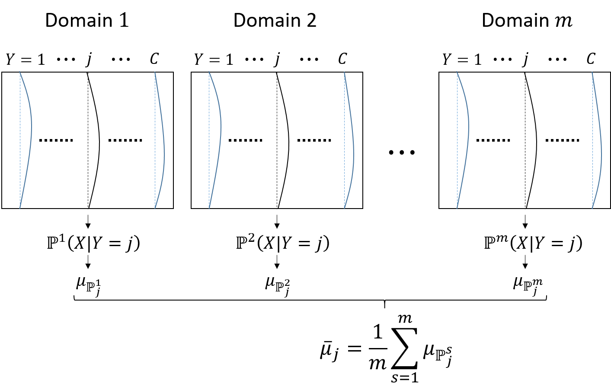
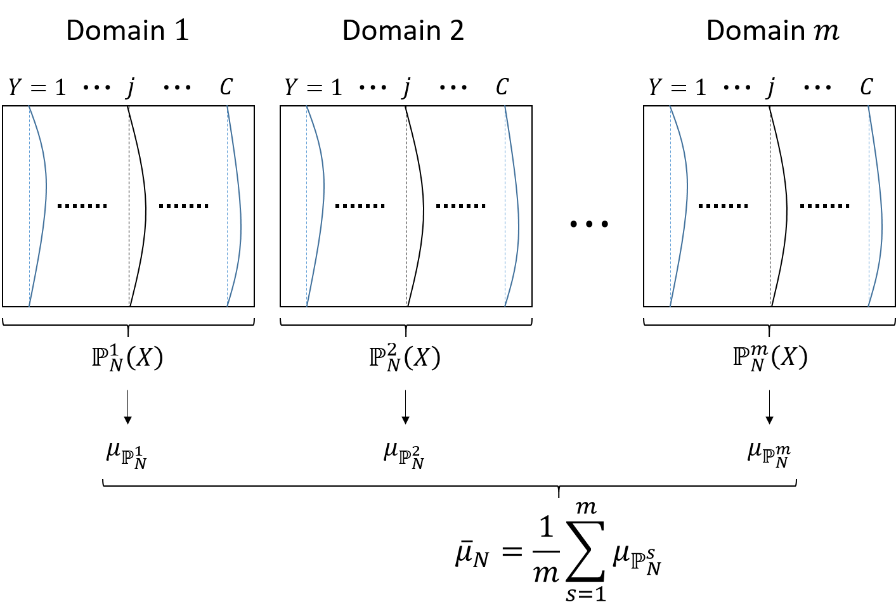

This post summarizes paper Domain Generalization via Conditional Invariant Representations [1].
Problem definition
Denote $\mathcal{X}$ and $\mathcal{Y}$ as the input feature and label spaces, respectively. A domain defined on $\mathcal{X} \times \mathcal{Y}$ can be represented by a joint probability distribution $\mathbb{P}(X, Y)$. For simplicity, we denote the joint probability distribution $\mathbb{P}^{s}(X, Y)$ of the $s$-th source domain as $\mathbb{P}^{s}$. The domain $\mathbb{P}^{s}$ is associated with a sample $D_{s} = \lbrace x^{s}_{i}, y^{s}_{i} \rbrace^{n^{s}}_{i=1}$, where $(x^{s}_{i}, y^{s}_{i}) \sim \mathbb{P}^{s}$ and $n^{s}$ denotes the sample size of the domain $\mathbb{P}^{s}$. Then we can define domain generalization as follows.
Definition 1 (Domain generalization) Given multiple related source domains $\Omega = \lbrace \mathbb{P}^{1}, \mathbb{P}^{2}, \dots, \mathbb{P}^{m} \rbrace$ and each domain is associated with a sample $D_{s} = \lbrace x^{s}_{i}, y^{s}_{i} \rbrace^{ n^{s} }_{i=1} \sim \mathbb{P}^{s}$, where $s = \lbrace 1, 2, \dots, m \rbrace$. The goal of domain generalization is to learn a classification function $f : \mathcal{X} \to \mathcal{Y}$ from source domain datasets $\lbrace D_{s} \rbrace^{m}_{s=1}$ and apply it to an unseen but related target domain $\mathbb{P}^{t}(X, Y)$.
Related work and causal motivation
Domain generalization has been widely applied in classification tasks [2] [3] [4] [5]. Previous work that are closely related to [1] assume that conditional distribution of the labels given the features $\mathbb{P}(Y|X)$ keeps stable or unchanged across domains while the marginal distribution of the features varies in different domains. This is motivated from standard classification perspective. Specifically, $\mathbb{P}(Y|X)$, which models the relation between $X$ and $Y$, is considered to be fixed while the changes in $\mathbb{P}(X)$ stem from some other influences such as selection bias.
However, the above assumption is too ideal from the causal perspective. A widely believed and adopted postulate in causality, which describes the independence between the cause and the causal mechanism is given below:
Postulate 1 (independence of input and mechanism) If $X$ causes $Y$ ($X \to Y$), then the marginal distribution of the cause, $\mathbb{P}(X)$, and the conditional distribution of the effect given the cause, $\mathbb{P}(Y|X)$, are “independent” in the sense that $\mathbb{P}(Y|X)$ contains no information about $\mathbb{P}(X)$ and vice versa.
In the postulate above, The (causal) conditional $\mathbb{P}(Y|X)$ can be thought of as the mechanism transforming cause $X$ to effect $Y$. Now let us get back to the domain generalization problem. In the typical context, class label $Y$ should be the cause and feature $X$ the effect so $\mathbb{P}(X|Y)$ and $\mathbb{P}(Y)$ are independent. In the anti-causal direction, $\mathbb{P}(Y|X)$ and $\mathbb{P}(X)$ are likely to be correlated or change together since $\mathbb{P}(Y|X)$ also contains certain information about the cause $X$. Therefore, existing methods, which assume $\mathbb{P}(Y|X)$ is fixed and $\mathbb{P}(X)$ varies across domains can be easily violated in reality.
In [1], the authors assume that $\mathbb{P}(X|Y)$ (the conditional of the effect given the cause) varies across domains while the marginal distribution $\mathbb{P}(Y)$ (the marginal of the cause) keeps stable. This assumption is more reasonable compared with those in previous works.
Conditional invariant domain generalization (CIDG)
CIDG method aims to find a conditional invariant representation $h(X)$ (a linear transformation of the original features) to reduce the variance of the conditional distribution $\mathbb{P}(h(X)|Y)$ across source domains. To achieve this, two regularization terms are proposed.
Total scatter of class-conditional distributions
Suppose there are $m$ related domains $\lbrace \mathbb{P}^{1}, \mathbb{P}^{2}, \dots, \mathbb{P}^{m} \rbrace$ on $\mathcal{X} \times \mathcal{Y}$. The marginal distribution on $\mathcal{X}$ of the $s$-th domain is denoted as $\mathbb{P}^{s}_{X}$. Suppose the class labels of each domain vary from 1 to $C$. For simplicity, the $j$-th class conditional distribution $\mathbb{P}^{s}(X|Y=j)$ of the $s$-th domain is denoted as $\mathbb{P}^{s}_{j}$. The total scatter of class-conditional distributions across domains can be formulated as:
\begin{align}
\Phi \left( \lbrace \mu_{\mathbb{P}^{1}_{1}}, \mu_{\mathbb{P}^{1}_{2}}, \dots, \mu_{\mathbb{P}^{m}_{C}} \right) = \sum^{C}_{j=1} \frac{1}{m} \sum^{m}_{s=1} \Vert \mu_{\mathbb{P}^{s}_{j}} - \bar{\mu}_{j} \Vert^{2}_{\mathcal{H}}, \tag{1}
\label{eq1}
\end{align}
where $\mu_{\mathbb{P}^{s}_{j}}$ is the mean embedding of $\mathbb{P}^{s}(X|Y=j)$ and $\bar{\mu}_{j} = \frac{1}{m} \sum^{m}_{s=1} \mu_{\mathbb{P}^{s}_{j}}$. $\frac{1}{m} \sum^{m}_{s=1} \Vert \mu_{\mathbb{P}^{s}_{j}} - \bar{\mu}_{j} \Vert^{2}_{\mathcal{H}}$ is called domain scatter in [5] and distributional variance in [2].
CIDG measures the domain scatter with respect to each class-conditional distribution whereas previous work [5] measures that with respect to the margianal distribution $\mathbb{P}^{s}_{X}$. Obviously, \eqref{eq1} is desired to be minimized. An illustration of scatter of class-conditional distributions is given in the figure below.

Feature transformation
Note that the goal is to find a conditional invariant representation $h(X)$ (a linear transformation of the original features) to reduce the variance of the conditional distribution $\mathbb{P}(h(X)|Y)$ across source domains.
Denote the feature matrix $\mathbf{X} = [x_{1}, x_{2}, \dots, x_{n}]^{T} \in \mathbb{R}^{n \times d}$ as the data matrix of samples from $m$ source domains, where $d$ is the dimension of the feature space $\mathcal{X}$ and $n = \sum^{m}_{s=1} n^{s}$. Define a set of functions $\boldsymbol{\Phi} = [\phi(x_{1}), \phi(x_{2}), \dots, \phi(x_{n})]^{T}$ related to the feature map $\phi: \mathbb{R}^{d} \to \mathcal{H}$.
In the feature space, the transformation can be a matrix $\mathbf{W}$ satisfying $h(x) = \mathbf{W}^{T} \phi(x)$. According to [6], $\mathbf{W}$ can be formulated as the linear combination of $\boldsymbol{\Phi}$, i.e., $\mathbf{W} = \boldsymbol{\Phi}^{T} \mathbf{B}$, where coefficient matrix $\mathbf{B} \in \mathbb{R}^{n \times q}$ and $q$ is the dimensionality of the subspace of $h(X)$.
Scatter of class prior-normalized marginal distributions
The scatter of each class-conditional distribution is estimated locally using the samples from that class. When the number of examples in each class is small, it can easily overfit the data. To further improve the estimation accuracy, we propose another regularization term which measures the scatter of class-prior normalized marginal distributions. The new regularization term is able to measure the global distance between all class-conditionals. In the $s$-th domain, the marginal distribution is defined as
\begin{align}
\mathbb{P}^{s}(X) = \sum^{C}_{j=1} \mathbb{P}^{s}(X|Y=j) \mathbb{P}^{s}(Y=j).
\end{align}
To mitigate the changes in $\mathbb{P}(X)$ induced by different $\mathbb{P}(Y)$, $\mathbb{P}(X)$ is enforced to be uniform. Then the class-prior normalized marginal distribution is defined as:
\begin{align}
\mathbb{P}^{s}_{N}(X) = \sum^{C}_{j=1} \mathbb{P}^{s}(X|Y=j) \frac{1}{C}.
\end{align}
The scatter of the normalized marginal distribution across domains can be formulated as:
\begin{align}
\Psi^{prior} = \frac{1}{m} \sum^{m}_{s=1} \Vert \bar{\mu}_{N} - \mu_{ \mathbb{P}^{s}_{N} } \Vert^{2}_{\mathcal{H}}, \tag{2}
\label{eq2}
\end{align}
where $\mu_{ \mathbb{P}^{s}_{N} }$ is the mean embedding of $\mathbb{P}^{s}_{N}(X)$ and $\bar{\mu}_{N} = \frac{1}{m} \sum^{m}_{s=1} \mu_{ \mathbb{P}^{s}_{N} }$.
When $\mathbb{P}(X|Y)$ is domain-invariant, same prior $\mathbb{P}(Y)$ ensures that $\mathbb{P}(X)$ is also domain invariant. Therefore, \eqref{eq2} measures the difference across the marginal distributions $\mathbb{P}(X)$ and is desired to be minimized. An illustration of scatter of class prior-normalized marginal distributions is given in the figure below.

Preserving discriminative power
Another two terms ($\boldsymbol{\Phi}^{between}_{\mathbf{B}}$ and $\boldsymbol{\Phi}^{within}_{\mathbf{B}}$) are included in the objective function to help preserve the discriminative power. Specifically, the examples with the same label should be similar and the examples with different labels should be well separated. The explicit definitions of them are omitted since the same terms were already used in [5].
Objective function
The objective of CIDG is:
\begin{align}
\arg \max_{\mathbf{B}} \frac{ \boldsymbol{\Phi}^{between} }{ \boldsymbol{\Phi}^{con} + \boldsymbol{\Phi}^{prior} + \boldsymbol{\Phi}^{within} }.
\end{align}
It is solved by reformulating as a constrained optimization problem and then finding the optimum using Lagrange multipliers.
References
- Li, Y., Gong, M., Tian, X., Liu, T & Tao, D. (2018, February). Domain generalization via conditional invariant representations. In AAAI.
- Muandet, K., Balduzzi, D., & Schölkopf, B. (2013, February). Domain generalization via invariant feature representation. In International Conference on Machine Learning (pp. 10-18).
- Xu, Z., Li, W., Niu, L., & Xu, D. (2014, September). Exploiting low-rank structure from latent domains for domain generalization. In European Conference on Computer Vision (pp. 628-643). Springer, Cham.
- Erfani, S., Baktashmotlagh, M., Moshtaghi, M., Nguyen, V., Leckie, C., Bailey, J., & Kotagiri, R. (2016). Robust domain generalisation by enforcing distribution invariance. In Proceedings of the Twenty-Fifth International Joint Conference on Artificial Intelligence (pp. 1455-1461). AAAI Press/International Joint Conferences on Artificial Intelligence.
- Ghifary, M., Balduzzi, D., Kleijn, W. B., & Zhang, M. (2017). Scatter component analysis: A unified framework for domain adaptation and domain generalization. IEEE transactions on pattern analysis and machine intelligence, 39(7), 1414-1430.
- Schölkopf, B., Smola, A., & Müller, K. R. (1998). Nonlinear component analysis as a kernel eigenvalue problem. Neural computation, 10(5), 1299-1319.